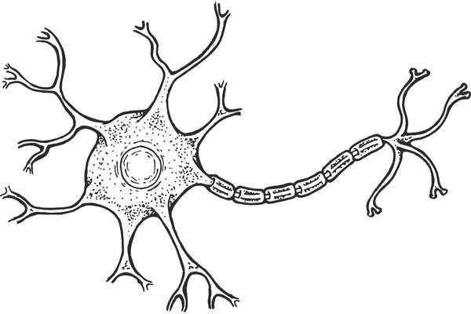

Introdução
Trabalho feito por: Gustavo B. Cavalcanti, Eduardo L. D. Viana, Wagner Kiota, Kenzo Igarashi, Lucas Julião e Julia Cristina
Nossa maquete representa um neurônio, escolhemos essa célula pelos seguintes motivos:
Primeiramente, o neurônio é a unidade fundamental do sistema nervoso, desempenhando um papel crucial na transmissão
de informações dentro do cérebro e entre o cérebro e outras partes do corpo. Ao escolher representar um neurônio,
buscamos destacar a complexidade e a importância desse componente na rede intrincada que forma nossa capacidade de
pensar, aprender e agir.
Além disso, a maquete de um neurônio nos proporciona a oportunidade de explorar e comunicar visualmente conceitos científicos e anatômicos. Queremos tornar acessível a compreensão sobre a estrutura e a função do neurônio, permitindo que todos apreciem a beleza da biologia e da neurociência.
O cérebro humano é um mistério fascinante, e o neurônio é como uma peça de quebra-cabeça crucial nesse enigma. Ao criar uma maquete detalhada, esperamos despertar a curiosidade e o interesse em todos que observarem nosso trabalho. Queremos que as pessoas se sintam inspiradas a aprender mais sobre o funcionamento do cérebro e a complexidade por trás de nossas ações cotidianas.
Em resumo, escolhemos representar um neurônio porque acreditamos que isso nos permitirá não apenas demonstrar nossa
compreensão dos aspectos científicos envolvidos, mas também compartilhar a fascinante maravilha que é o sistema
nervoso humano. Esperamos que todos apreciem a nossa maquete e se sintam motivados a explorar mais sobre o incrível
mundo da neurociência.
Muito obrigado!!